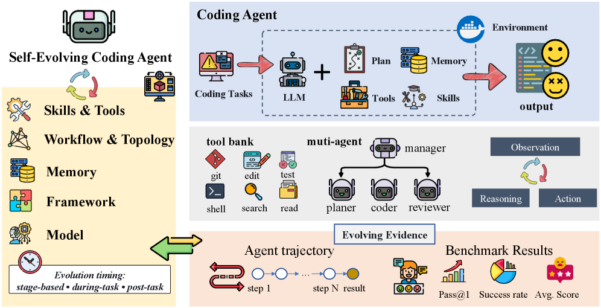

Survey: Self-Evolving Coding Agents
TL;DR
- "Self-Evolving Coding Agents" (Hao Zhou, Haichuan Hu, Ye Shang, Quanjun Zhang; arXiv 2608.03392, Aug 4 2026) surveys coding agents that keep changing after deployment, defined as "an agentic software engineering system that updates its behavior or internal components based on previous coding attempts and software-specific feedback." Paper list at github.com/zhouhao1024/Awesome-Self-Evolving-Coding-Agents.
- The core contribution is an object-centered taxonomy — what actually gets updated: agent framework (SICA, SIFT, Darwin/Mendel/Huxley Gödel Machines), memory (SWE-Exp, EvoCoder, repository memory, EvoRepair), skills & tools (CODESKILL, gskill, Socratic-SWE, Live-SWE-Agent), model policy (Self-play SWE-RL, Agent-RLVR, CURE, Sol-Ver, ACE), and workflow/topology (SEW, AFlow, EvoMAC, AgentConductor) — crossed with two orthogonal axes: when evolution happens (task-time / post-task / stage-wise) and what evidence drives it (outcome / environmental feedback / trajectory-derived).
- The survey's sharpest thesis: software engineering is the natural domain for agent self-evolution because feedback is executable and repeatable (tests, compilers, CI, repo history) — but exactly this makes evolution fragile, since a misleading test or benchmark shortcut doesn't just break one patch, it gets stored as memory, distilled into a skill, or baked into a policy. The endgame problem is making evolution trustworthy, not just making it happen.
Why this matters
Most deployed coding agents are frozen artifacts: the harness ships, the model is fixed, and every session starts from zero while the repository underneath keeps moving. Meanwhile every run throws away exactly the material a learning system would want: compiler diagnostics, failed patches, runtime traces, review comments. This survey is the first systematic map (to my knowledge in this tracker) of the work closing that loop specifically for software engineering — squarely on this reading list's central thread. Its most useful move is refusing to treat "self-evolution" as one technique, instead asking three separable design questions — what evolves, when, on what evidence — precisely the vocabulary you need when deciding whether your own harness should accumulate memory, distill skills, rewrite its scaffold, or train its policy. It also draws a boundary this area badly needs: SWE-oriented post-training on curated data (SWE-RL) and executable training infrastructure (SWE-Gym, R2E-Gym) are ingredients, not self-evolution — the loop only counts when the agent's own attempts feed back into its future behavior.
The core idea
The paper positions self-evolving coding agents at the intersection of two lineages and insists they're reducible to neither. A conventional coding agent acts in software environments but discards its experience; a general self-evolving agent adapts, but from generic signals like textual critiques or scalar rewards. A self-evolving coding agent adapts from software-specific, executable evidence: unit tests, compiler diagnostics, runtime traces, CI logs, commit history, code reviews. The survey's boundary table pins down what changes in each case: respectively "task state and generated patches," then "prompts, memory, tools, policies, or architectures," and finally "repository memory, coding skills, workflows, policies, or scaffolds."

Figure 1 from the paper: the overview of self-evolving coding agents — the coding loop's executable feedback flows back into the agent's evolvable components.The paper gives no formal mathematics; the following formalization is my reconstruction of its prose definition (marked as such — the paper defines everything conceptually). The agent at generation \( t \) is a tuple of evolvable objects,
where \( F \) is the agent framework/scaffold code, \( M \) the memory store, \( S \) the skill library, \( T \) the tool set, \( \pi \) the model-side policy, and \( W \) the workflow/topology — the five taxonomy branches (skills and tools share one branch). Evolution is then an update operator over software-specific evidence,
where \( e_{\text{outcome}} \) is outcome evidence (solve rate, test pass rate, verifier score), \( e_{\text{env}} \) is environmental feedback (compiler diagnostics, runtime exceptions, failed test logs), and \( e_{\text{traj}} \) is trajectory-derived evidence (the full record of the agent's attempts). (Reconstruction — the survey states this in prose, Sections 2.3 and 4.2, not as equations.)
How it works
The taxonomy's five branches, with what I found most load-bearing in each:
Framework self-evolution treats the agent itself as a modifiable software artifact — the most distinctively "coding" form, since the agent can inspect its own implementation, patch it, and validate the new version. Scaffold rewriting: SICA (Robeyns et al. 2025) edits its own codebase to discover prompting schemes and tools; SIFT makes the search sample-efficient with LLM-as-judge plus lightweight tree search; STOP is the recursive-self-improvement ancestor. Archive-based evolution: the Darwin Gödel Machine and successors (Mendel, Huxley) maintain populations of executable agent variants and search over self-modifications across lineages. The survey flags this branch as highest-risk: a bad framework change breaks the machinery that generates all future actions, so validation, rollback, and robustness checks are first-class requirements.
Memory self-evolution is not "store the history" — it's evolving the memory mechanism: what is retained, how abstracted, when updated, how retrieved. SWE-Exp banks issue-resolution trajectories including failures; EvoCoder separates general from repository-specific experience in a hierarchical pool; subtask-level memory (Shen et al. 2026) stores experience at analysis/localization/editing/validation granularity rather than whole trajectories; repository memory (Wang et al. 2026a) builds on commit history and issue-code linkage — memory grounded in the temporal structure of a codebase, which the survey rightly calls distinctive to SE; EvoRepair specializes to vulnerability repair.
Skill & tool self-evolution converts experience into actionable procedures — the survey's contrast with memory is crisp: memory records what happened, skills encode how to act. CODESKILL distills trajectories into a skill bank at task-level and event-driven granularity, treating skill management itself as a learnable policy; gskill evolves repository-specific "onboarding documents" validated by running agents on SWE-smith-generated tasks; Socratic-SWE closes the loop — distill a skill registry from traces, generate targeted repair tasks from it, train the solver, repeat. Tool self-evolution is called out as underdeveloped, with Live-SWE-Agent (a bash-only scaffold that synthesizes its own editors and analyzers mid-task) the main SE-specific example.
Model self-evolution is where the survey draws its most important boundary: post-training counts as self-evolution only when the training signal closes around the agent's own attempts. Self-play SWE-RL couples bug generation, bug solving, and executable verification in real repos; Agent-RLVR uses guided reattempts; CURE, ZeroCoder, Sol-Ver, and ACE co-evolve coder and verifier/tester roles so that executable disagreement between programs and tests becomes a persistent policy update. By contrast SWE-RL (curated software-evolution data) is "SWE-oriented model optimization," and SWE-Gym/R2E-Gym/SWE-RM are infrastructure and learned evidence, not self-evolution. Crucially, the survey cites analysis (Liu et al. 2026) that self-play only sustains improvement with learnable information gain across iterations — otherwise the loop just reinforces its own biases.
Workflow & topology self-evolution makes the collaboration structure itself mutable: SEW evolves both prompts and workflow topology; AFlow searches code-represented workflows with MCTS; EvoMAC updates a multi-agent network via unit-test verification and "textual back-propagation"; AgentConductor generates task-adaptive communication DAGs, on the observation that easy tasks suffer from excessive discussion while hard ones need richer interaction.
The generic loop, assembled from the survey's time-and-evidence framework (reconstruction):
A ← (framework F, memory M, skills S, tools T, policy π, workflow W)
loop over incoming coding tasks τ:
trajectory ← run A on τ # inspect, edit, test, patch
# --- task-time evolution (within τ) ---
while τ unsolved and budget remains:
e_env ← compiler errors, failed tests, tool failures
adapt current patch / tools / workflow using e_env
(e.g., Live-SWE-Agent synthesizes a new tool mid-task)
# --- post-task evolution (after τ) ---
e_traj ← full trajectory (successes AND failures)
M ← update memory (SWE-Exp, repository memory)
S ← distill/refine skills (CODESKILL, gskill)
# --- stage-wise evolution (after a batch) ---
if enough verified trajectories accumulated:
e_out ← solve rates, test pass rates, verifier scores
π ← train policy on self-generated tasks + outcomes # Self-play SWE-RL
F, W ← select surviving scaffold/workflow variants # DGM, SEW
validate, keep rollback path; check information gain
Results
This is a survey, so the "results" are synthetic rather than empirical — no new numbers. The synthesis yields: (1) the five-branch object-centered taxonomy with representative systems per leaf (Figure 2 in the paper); (2) the finding that evaluation is dominated by repository-level issue resolution — SWE-bench and its Lite/Verified/Pro variants, with SWE-Gym as executable environment — while HumanEval/MBPP/APPS/CodeContests/LiveCodeBench serve as complementary controls that miss long-horizon repo interaction; (3) a pointed metrics critique: pass/resolve rates show that an agent improved but not which evolved component caused it, so evaluations should expose the evolution process itself (SICA tracks modification gains under cost constraints; DGM maintains variant archives); and (4) four challenge clusters — reproducibility/contamination/benchmark overfitting, feedback reliability and safety, quality control for long-term memory/skills/coordination, and evaluation beyond short benchmarks (maintainability, security, cross-domain transfer — the last "largely unexplored").
How it connects
This is the software-engineering-specific companion to the Self-Improvement in Modern Agentic Systems survey (2607.13104) already in this tracker — that paper's configuration-plus-update-operator formalism maps almost one-to-one onto this taxonomy, with this survey adding the domain-specific evidence axis (executable feedback) the general survey lacks. The framework branch is where Recursive Harness Self-Improvement (Sakana/Berkeley, 2607.15524) and the Harness Handbook (2607.13285) live: RHI evolves a prompt-level harness spec rather than scaffold code, and the Handbook's behavior-localization problem is exactly the capability an SICA-style scaffold-rewriting agent needs to edit itself reliably. Qwen's Skill Self-Play (2607.22529) is a model-branch instance of the same proposer/solver pattern as Self-play SWE-RL, and this survey's "learnable information gain" caveat is the theoretical warning label for that whole family. MSCE (2607.16621) sits precisely on the memory-to-skill boundary this survey draws — crystallizing evidence-backed policies into callable skills with applicability metadata is a governance answer to the stale-memory challenge flagged here.
Critical take
As cartography this is genuinely useful — the what/when/evidence decomposition and the self-evolution-vs-post-training boundary are distinctions I expect to reuse. But the boundaries wobble under load: Socratic-SWE is filed under skills while admittedly straddling model evolution, and the "closed around the agent's own attempts" criterion is asserted rather than operationalized — plenty of pipelines mix curated and self-generated data, and the survey gives no test for when the mixture counts. There is no quantitative meta-analysis: no comparison of how much each branch actually buys on SWE-bench, which is the question a practitioner has. The corpus leans heavily on 2025–2026 preprints, including an anonymous under-review citation (Mendel Gödel Machine), so several load-bearing examples are unvetted. And for a paper whose conclusion is that evolution must be trustworthy, the safety treatment is thin — one challenge paragraph, no threat model for what a scaffold-rewriting agent optimizing benchmark feedback actually does wrong.
If you remember three things
- Ask three questions of any self-evolving coding agent: what evolves (framework / memory / skills+tools / model / workflow), when (task-time / post-task / stage-wise), and on what evidence (outcome / environmental / trajectory-derived) — the taxonomy is a design checklist, not just a literature map.
- Post-training is self-evolution only if the loop closes: the signal must come from the agent's own attempts and feed its future behavior — SWE-Gym and reward models are infrastructure, and self-play without learnable information gain just amplifies bias.
- Executable feedback is a double-edged sword: it makes SE the best domain for agent self-evolution, but a wrong test or benchmark shortcut becomes persistent — stored as memory, distilled into a skill, or trained into the policy — so validation, rollback, and memory hygiene are the actual hard problems.